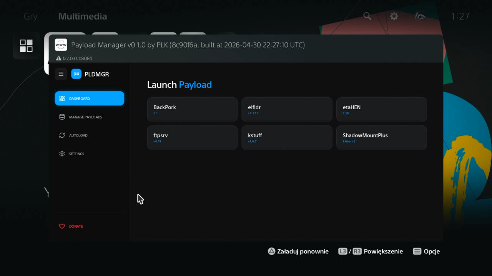

WWB HOST · PLAYSTATION
Choose your console
Open your console’s workspace to find loaders, payloads, game patches and downloads.
Open PS4 14.00 loader- Console
- Firmware

PS4
Open host
WWB HOST · PLAYSTATION
Open your console’s workspace to find loaders, payloads, game patches and downloads.
Open PS4 14.00 loader